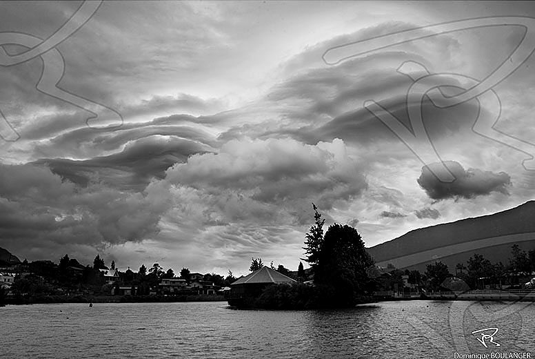
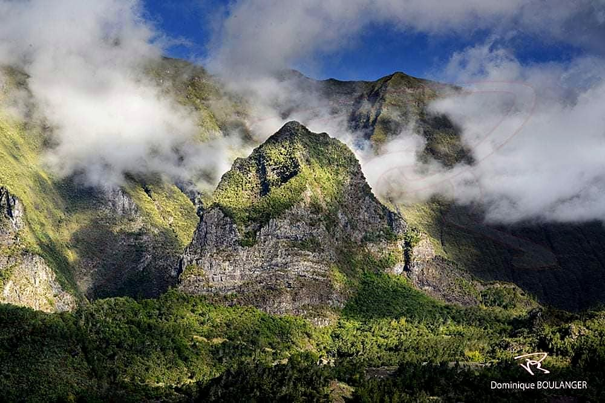
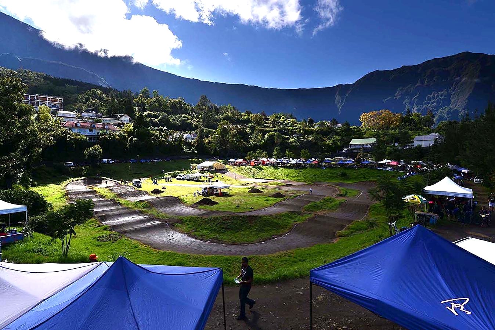

Tirages
Les paysages de Cilaos en tirage grand format, sur tous supports, pour habiller une maison, un gîte ou un bureau.
« Tirage sur tous supports »Photographe · Cilaos · La Réunion
Les remparts, les nuages et les pistes du cirque de Cilaos, saisis au Nikon D850 et offerts en tirage grand format, sur tous supports.
Une famille de photographes
Dominique est né à Cilaos et le photographie depuis vingt ans. Il garde chez lui une collection impressionnante d'images de sa ville natale, depuis les années quarante : celles de son papa, de son oncle et de son grand-père Ah Moye, photographes eux aussi.
Ses publications en gardent la trace, signées « ARCHIVES Dominique BOULANGER » : un regard qui connaît chaque rempart, chaque piste et chaque ciel du cirque.
D'après Le Quotidien de La Réunion, 17 juillet 2026, et l'Instagram @dominique_boulanger.

Le cirque dans l'objectif
Chaque image se commande en tirage grand format, comme Dominique le propose sous ses photos. Faites glisser pour parcourir.


← glisser →
Ce que Dominique propose
Les paysages de Cilaos en tirage grand format, sur tous supports, pour habiller une maison, un gîte ou un bureau.
« Tirage sur tous supports »Baptêmes et événements : les moments qui comptent, racontés en images.
BMX, VTT, compétitions : l'œil d'un passionné de vélo au bord de la piste.
Des images de votre activité et de vos lieux, prises au cœur du cirque.
Le vélo dans l'objectif
Les pilotes au cœur de Cilaos, photographiés d'en haut.
Voir la publicationUne exposition de bicross vintage, OLDSCHOOL BMX 974.
Une première pour île de la Réunion !!!Voir la publication
Offrir pour Noël
Un tirage de Dominique, c'est un paysage du cirque à accrocher chez soi : un cadeau pour celles et ceux qui aiment Cilaos, de près comme de loin.
Rencontrer Dominique
27 bis rue du Père Boiteau
97413 Cilaos, La Réunion
Au sein de l'Archipel des Métiers d'art de Cilaos.
Tirage, reportage ou événement sportif : un message suffit pour en discuter.